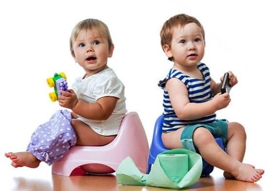
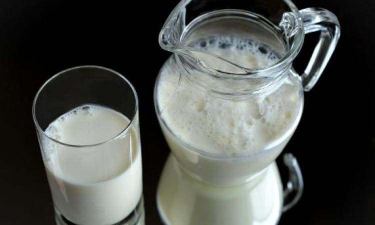
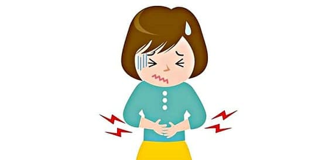
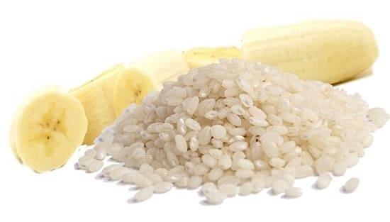
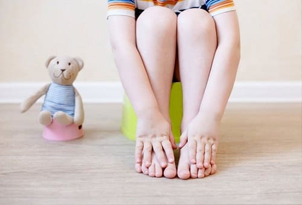

Диарея — неприятное событие для всех вовлеченных, начиная от ребенка, который страдает из-за кишечного расстройства, и заканчивая родителем, которому пригодится убирать это безобразие. К счастью, большинство причин диареи не являются серьезными и проходят самостоятельно. Вот несколько советов, которые помогут вам и вашему ребенку без особых проблем пережить это грязное дело.
СИМПТОМЫ
Диарея — это:
• учащенный стул. Если ваш ребенок начинает оправляться вдвое чаще обычного, это может указывать на кишечное расстройство;
Учтите, что у всех младенцев и детей в норме бывают кратковременные изменения консистенции стула. Если вы один-два раза заметили, что стул отличается от нормального, это еще не повод волноваться. |
• разжижение стула. Если стул стал менее оформленным, водянистым, содержит много слизи зеленого цвета или более жидкий, чем обычно это считается существенными изменениями.
ПРИЧИНЫ
Аллергия на белки молока. Это наиболее распространенная инфекционная причина диареи младенцев и детей постарше. Малыши, вскармливаемые грудью, могут реагировать на белки выпитого коровьего молока, которые проходят в грудное молоко. Младенцы, вскармливаемые искусственно, могут реагировать на белки молочной смеси. Дети постарше едят больше молочных продуктов и могут испытывать больше дискомфорта.

Аллергическая диарея обычно не сопровождается острыми проявлениями, такими как лихорадка и рвота, в отличие от заболеваний инфекционной природы. Вместо этого аллергическая диарея имеет тенденцию к хронизации и отсутствию других симптомов заболевания кроме умеренно выраженного расстройства кишечника. Аллергия на пшеницу и сою — следующие по частоте виновники аллергической диареи.
Инфекционная диарея. Множество бактерий и вирусов могут вызывать диарею, обычно сопровождающуюся лихорадкой и рвотой. Наличие этих симптомов - явное свидетельство того, что диарея у вашего ребенка имеет инфекционную, а не аллергическую природу.
• Вирусы — ротавирус — один из самых распространенных идентифицированных виновников кишечного расстройства. Есть и другие, но поскольку специфического лечения не существует, то обычно нет необходимости определять, какой именно вирус вызвал заболевание.
• Бактерии – Е. coli и сальмонеллы наиболее частые бактериальные причины. Развитие заболевания возможно и при заражении дизентерией, иерсиниозом. Самой заметной особенностью бактериальной диареи является наличие крови в стуле. Кровавый понос может указывать на тяжелую бактериальную диарею, при которой необходима врачебная помощь.
• Паразиты — заразиться множеством кишечных паразитов можно во время путешествий в страны третьего мира. Признак, свидетельствующий о паразитарной природе диареи, — водянистый стул на протяжении более чем двух недель.
Диарея после приема антибиотиоков. Многие дети получают 1—2 курса антибиотиков каждый год, и это вольно частая причина диареи. В большинстве случаев диарея не слишком выражена, и ее можно уменьшить с помощью пробиотиков, продолжая курс антибиотика. Если диарея выражена (более 4—5 раз) и/или с кровью, прекратите антибиотик и свяжитесь со своим врачом.

КОГДА НЕ СТОИТ ВОЛНОВАТЬСЯ
Большинство инфекционных диарей, неважно — бактериальной или вирусной природы, проходят без какого-либо специфического лечения. До тех пор, пока ваш ребенок получает достаточно жидкости и не выглядит обезвоженным, в целом хорошо себя чувствует и у него нет крови в стуле, вы можете быть уверены, что он поправится через неделю-другую. Лихорадка, боль в животе и рвота — частая и вполне ожидаемая часть начальной фазы заболевания, и обычно не являются признаками дальнейшего тяжелого течения.
КОГДА ВОЛНОВАТЬСЯ
Вот некоторые признаки, появление которых означает, что вы должны в течение 1 дня обратиться за медицинской помощью:
ЛЕЧЕНИЕ
Аллергическая диарея. Первое, что надо сделать при подозрении на аллергическую природу диареи у вашего младенца или малыша, устранить наиболее частую причину — продукты из коровьего молока. Кормящая мать для уточнения диагноза должна исключить их из своего рациона примерно на 3 недели. Если младенец вскармливается смесью, замените ее соевой и сообщите об этом врачу при ближайшем плановом осмотре. На три недели исключите коровье молоко, йогурт и сыр из питания малышей и детей постарше.
Инфекционная диарея. В случае вирусных диарей медикаментозного лечения не существует. Даже при большинстве бактериальных диарей нежелательно применение антибиотиков, которые могут усилить понос. Однако в некоторых случаях ваш врач может решить, что лечение необходимо.
Домашние средства. Кроме антибиотиков, других рецептурных средств для лечения диареи нет. Вы можете без опасений попробовать приведенные ниже средства, чтобы улучшить состояние вашего ребенка, независимо от причины диареи:
• Дайте пробиотики — например, линекс – это полезные бактерии, которые живут в кишечнике и поддерживают здоровье пищеварительной системы. Инфекции, аллергии и антибиотики способствуют уменьшению количества этих бактерий.
• Кормите ребенка продуктами БРЯТ — бананы, рис целый дробленый, яблочное пюре или печеные яблоки и тосты или хлеб в течение нескольких дней, чтобы уменьшить диарею.
• Избегайте определенных продуктов — минимизируйте потребление коровьего молока, яблочного, грушевого и вишневого сока (в них содержится особый вид натурального сахара, который может усилить диарею), ограничьте фрукты, способствующие послаблению стула, - сливы и персики, пока стул не нормализуется.
• Следите, чтобы ребенок достаточно пил во избежание обезвоживания: сок белого винограда, разведенный пополам с водой, — лучший напиток для профилактики обезвоживания. Так же хороши растворы электролитов для оральной регидратации (например, регидрон), но обычно в них нет необходимости, если врач не решит иначе.

Безрецептурные средства от поноса нельзя давать детям моложе 12 лет без назначения врача. При искусственном замедлении дефекации токсины, вырабатываемые болезнетворными микробами, могут усилить воспаление в кишечнике и ухудшить состояние ребенка. Дети старшего возраста более устойчивы к воздействию этих токсинов и высоко оценят облегчение, которое-приносят эти медикаменты. |
• Используйте смеси на основе сои – длительная диарея может раздражать слизистую кишечника до такой степени, что он перестает переваривать молочную смесь. Переключитесь на соевую смесь до нормализации стула.
• Дополнительно используйте крем против опрелостей — не ждите, пока появится сыпь. Не скупясь, наносите крем от опрелостей с оксидом цинка при каждой смене подгузника, чтобы предупредить раздражение.
ЧТО МОЖЕТ СДЕЛАТЬ ВРАЧ
Бактериальная, или паразитарная, инфекция. При подозрении на одно из этих состояний врач может отправить образец кала на исследование лабораторию. Обычно это занимает два-три дня. Можно также провести исследование при вирусной диарее, если вы и врач хотите подтверди, что причиной тяжелой диареи является ротавирус. Врач также может оценить уровень обезвоживания, чтобы определить, не надо ли обратиться в отделение неотложной помощи для внутривенного введения жидкостей.
Аллергическая диарея. Если вы подозреваете эту причину, но безмолочная диета не помогает, ваш врач может назначить анализы крови для выявления пищевой аллергии на другие продукты.
Реакция на антибиотики. В редких случаях у ребенка наблюдается хронический жидкий стул на протяжении многих месяцев после приема антибиотика. Это может указывать на избыточный рост дрожжевых грибков в кишечнике. Пробиотиков бывает достаточно, чтобы побороть грибковую инфекцию, но ваш врач может назначить противогрибковые препараты на несколько недель. Для подтверждения роста грибов можно сделать анализ кала.

Здоровье ребенка от докторов Сирс / Сирс У. и др.